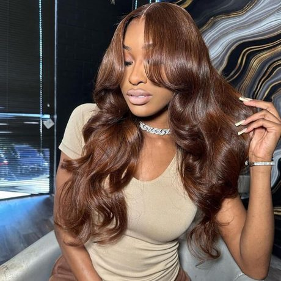
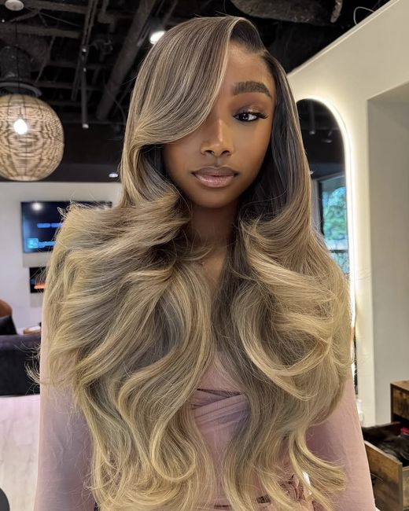

Hair by Jordan
Custom wig installs, flawless melts, and color that turns heads — crafted strand by strand for the woman who never blends in.
Houston, Texas

- Custom Wig Installs
- Frontal Sew-Ins
- Color & Customization
- Wig Revamps
- Bridal & Events
- Houston, Texas
Services
Our popular services
Every install is booked one-on-one, never double-stacked. Pick the service that fits what you came for — or message me and we’ll figure it out together.
Book Appointment
About Me
Crafted by hand. Trusted across Houston.
I’m Jordan, and I’ve been installing and customizing units in Houston for over five years. What started as doing my own hair in a dorm mirror turned into a chair that stays booked — because I treat every unit like it’s going on my own head. No rushed melts, no cookie-cutter installs, no leaving you with something you don’t know how to maintain.
-
My Promise
One client at a time, never double-booked. You get my full attention from wash to final curl.
-
My Approach
Your face shape, your lifestyle, your budget. We plan the unit together before a single knot gets bleached.
-
500+
units installed
Our Work
The
Gallery
Every install is a work of art. Browse the portfolio and see the transformations for yourself — seamless lace, flawless finishes, every time.
Photo 01 / 06